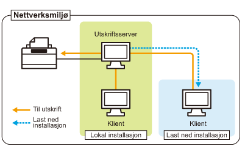

Hvis du bruker skriveren i utskriftsservermiljøet, kan du utføre utskrift fra andre datamaskiner (klienter) som ikke er direkte koblet til denne skriveren.
 |
Datamaskinen som er koblet direkte til skriveren kalles "utskriftsserver", og de andre datamaskinene som bruker skriveren via utskriftsserveren kalles "klienter".
|

Hvis du også angir utskriftsserveren kan du administrere skriveren effektivt som følger.
Du kan administrere alle klientjobbene på utskriftsserveren.
Klienter kan laste ned og installere skriverdriveren fra utskriftsserveren. (CD-ROM-en er ikke påkrevd.)
Hvis du ønsker å bruke skriveren i utskriftsservermiljøet, utfør en av følgende oppgaver.
Hvis datamaskinen din er utskriftsserveren
|
1.
|
Installer skriverdriveren.
|
||
|
2.
|
Konfigurere utskriftsserveren.
|
Hvis datamaskinen er en klientdatamaskin
Installer skriverdriveren.
Det er to måter å installere skriverdriveren på klientdatamaskiner: Lokal installasjon og nedlasting av installasjon.
<Lokal installasjon>
Du kan installere skriverdriveren ved å bruke vedlagte CD-ROM.
<Last ned installasjon>
Du kan installere skriverdriveren uten å bruke vedlagte CD-ROM, men ved å laste ned skriverdriveren fra utskriftsserveren. Det er de følgende to måtene å laste ned og installer skriverdriveren.
|
MERK
|
||
|
Forholdsregler ved nedlasting og installering av skriverdriveren
Hvis et 64-biters operativsystemene kjører på utskriftsserveren, støttes ikke nedlastingsinstallasjonen for en klientdatamaskin der en av de følgende 32-biters operativsystemene kjører på grunn av Windows-begrensningen.
Windows 2000
Windows XP (der ingen oppdateringspakke eller SP1 er installert)
Windows Server 2003 (der ingen oppdateringspakke er installert)
|